← 返回阅读库 · 原论文目录
论文讲解阅读文档 · 新模型 · v087
EViT Expediting Vision Transformers via Token Reorganizations[2202.07800]
视频时长 00:04:23；讲解文字 2,131 字符；提取讲解画面 14 张。按视频原顺序阅读，每段文字保留时间戳。
文字来自整段视频的自动语音转写，按自然停顿分段，并与 PPT / 论文页面 / 演示画面对齐。未将讲解压缩为摘要；术语、数字和口述公式请结合画面及原论文核对。 阅读稿已校正规范部分明确术语误识别；原始逐字稿和每处修改记录另行保留。
讲解画面为源视频截图（640×360），不是可编辑 PPT 文件。全片按每秒 2 帧扫描内容变化，逐步展开页保留；连续动画保留代表画面。清晰度受源视频限制。
下载完整资料包 · 含离线 HTML、PDF、Word、全部 PPT 画面和字幕。
原论文与材料
Not All Patches are What You Need: Expediting Vision Transformers via Token Reorganizations · 下载完整 PDF（21 页）
按时间阅读
00:00:00–00:00:27 · 画面 001
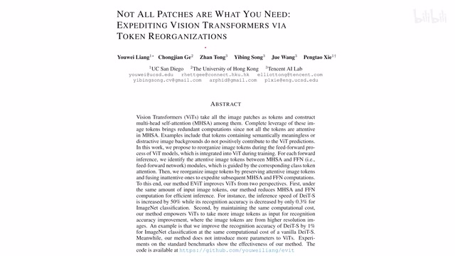
00:00:00–00:00:27 · 画面 001大家好,今天我们来快速说一篇论文 Not all patches are what you needExpediting vision transformers via token reorganizations 这篇论文跟我们之前介绍的 Token Learner 它的核心的思想是非常像的，就是我在处理视频大的图像的时候我会有很多个 TokenToken 数量一多 Transformer 的 attention 里面占用的内存就大了，就容易造成各种的困扰
00:00:27–00:00:41 · 画面 002
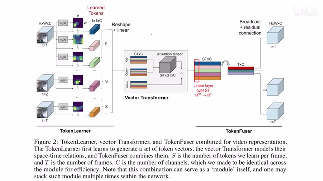
00:00:27–00:00:41 · 画面 002那怎么办呢，在 TokenLearner 里面它是通过在 spatial 这个 domain 空间尺度上这么一个 pooling，相当于把我们的整个这个 tensor 它的尺度给它压缩，强行的让它通过这么一个 bottleneck 也不能叫 bottleneck，就像过一个漏斗一样这样子呢，让我们的这个 token 的这个数量减少
00:00:41–00:00:42 · 画面 003
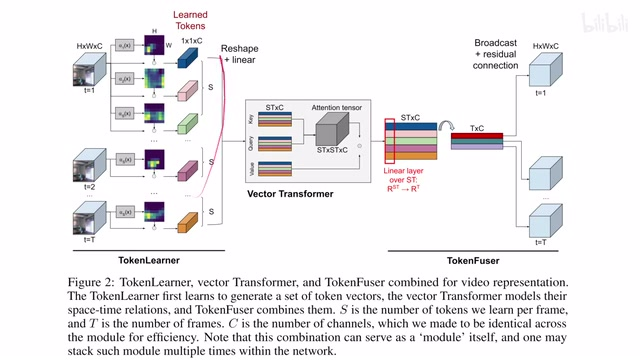
00:00:41–00:00:42 · 画面 00300:00:42–00:00:48 · 画面 004
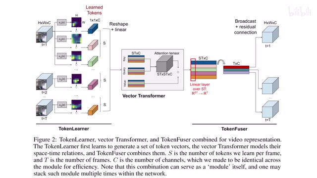
00:00:42–00:00:48 · 画面 004那在本文中呢，作者的方法就更直接了啊，你不是嫌 token 多是吗？啊，我直接砍去一些啊不就好了吗？啊，这个呢，作者叫这个 token reorganization，我们其实看到他的核心呢，就这张图啊，虽然这个图的配色啊，我实在是觉得啊，啊，这个那我们来看一个 transformer encoder，他输入这个 image token 和这个 classification token 啊，输进来我留谁扔谁，这这不能随便来对吧
00:00:48–00:00:58 · 画面 005
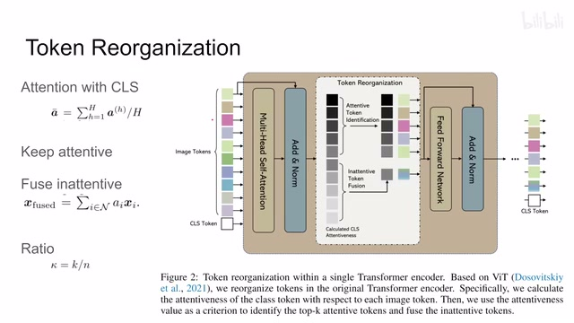
00:00:48–00:00:58 · 画面 00500:00:58–00:01:00 · 画面 006
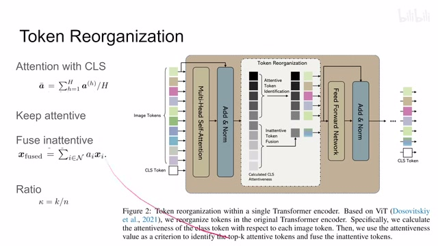
00:00:58–00:01:00 · 画面 00600:01:00–00:02:09 · 画面 007
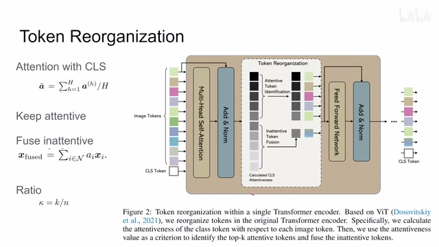
00:01:00–00:02:09 · 画面 007这里呢，作者的一切判断呢，即一个假设就是说，因为我这个 classification token 里面的 feature 是后面用来做下游任务的，那么和他相关的这个 attention 强的这些 patch 那看来是很重要的，对下游任务有帮助的，那和他的这个 attention 不那么强的这些 patch 可能就没那么重要对吧，我们就可以把它们扔掉或者说是或者说是打包压缩，压缩减少他们的这个 token 数量那按照这个设计速度就很直接，你在这个 transformer encoder 里面过完这个 multi-head self-attention 那你可以计算出这个 classification token 相对于每一个 image token 他们之间的这个 attention 的这个强度嘛对吧，你的 attention matrix 有了，然后呢你就根据它的这个强度来排序，前面这些 attention 高的这些这个 token 啊就按原样保留送到后面 MLP 里面就可以了，那对于这些 attention 不高的这些 token 啊来都来了也别浪费对吧
这里呢，作者说求个平均，把这几个 token 捏到一起变成一个 token 送到后面里面，那这样子呢，就人工的减少了这 token 的数量，而且你想减多少就减多少嘛对吧
00:02:09–00:02:10 · 画面 008
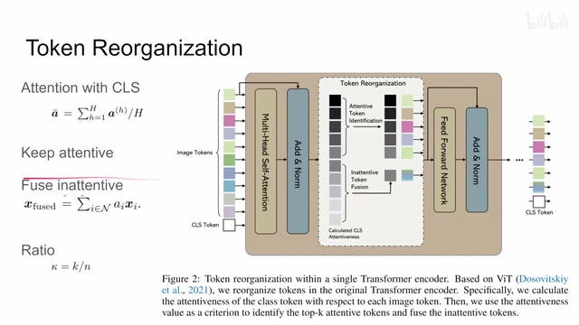
00:02:09–00:02:10 · 画面 00800:02:10–00:02:53 · 画面 009
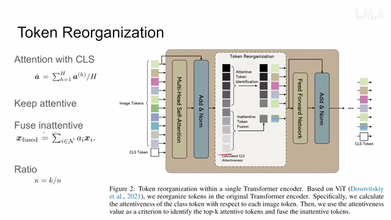
00:02:10–00:02:53 · 画面 009同时呢，这个结构呢啊，就是一个 transformer 通通的结构里面加了这么一层这个操作，所以呢理论上你可以把它来替换任何已有的这个 transformer 的 encoder，那当然这有一个小的设计细节需要注意的就是，因为我们这里计算是 multi-head self-attention 也就是说会我们会有很多个这个 head，每个 head 都有一个 attention matrix，就有很多个这个 attention matrix，那么我们应该用哪一个为准来确定这个 image token 和这个 classification token 之间的关系呢
不用纠结哪一个了，直接加起来求和求个平均啊就结束了对吧，非常直接的一个设计，那我们直接来看作者汇报的结果吧，这里呢，作者改了这个 DeiT 分了两种情况，一种是啊，我这些没用的这个 token 我就直接扔掉了啊，另一种呢就是我把这些没用的 token 捏成一个这个 token，就是用我们刚刚说的这个求均值的方法对吧，可以看到可以看到性能的轻微提升啊，处理的速度呢增加
00:02:53–00:03:23 · 画面 010
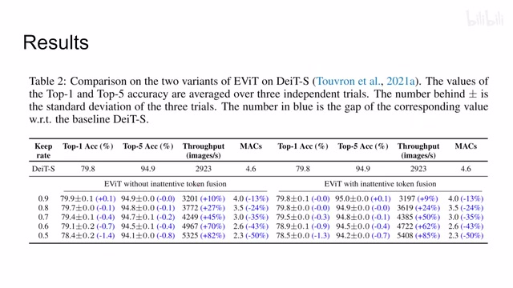
00:02:53–00:03:23 · 画面 010随着你抛弃的 token 的数量增加，性能虽然有下降，但是你处理的速度大幅增加，对吧？参数量大幅减少，这个就是作者的主要一个观察。那么这里呢，作者还做了 visualization，就是比如说一个 12 层的网络，它只在第四、第七和第十层，这是它默认的配置，在这些层去扔掉一些 token，其他层呢就是正常的这个 transformer 这个结构。你可以看到呢，它扔掉的这些呢都是一些背景的，跟我们识别没有关系的这么一些
00:03:23–00:03:24 · 画面 011
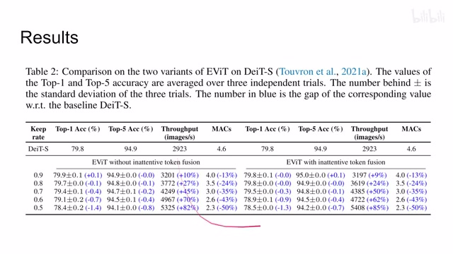
00:03:23–00:03:24 · 画面 01100:03:24–00:03:25 · 画面 012
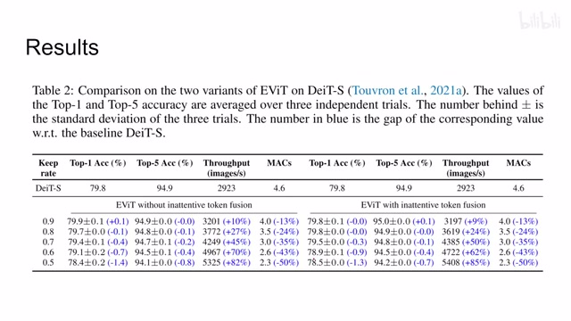
00:03:24–00:03:25 · 画面 01200:03:25–00:04:22 · 画面 013
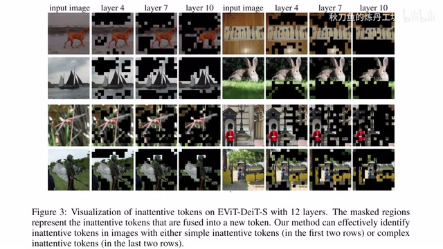
00:03:25–00:04:22 · 画面 013token 这些 patch，那保留的呢都是我们跟我们下个任务相关的这么一些东西。那可以说呢，本文作者设计的这个机制呢是有效的。那么作者在后面的这个附录里面呢，讨论了大量的这个不同配置的实验，包括我这个 organization 这些东西在哪一层发生，对吧？都有讨论。那感兴趣的朋友呢，非常推荐你去查看原文那总的来说呢，这篇文章的出现呢并不意外啊，我们总要想办法去减少 token 的数量，然后呢，他的做法呢也是非常直接。我们期待对这种这个扔掉 token 的这个方式更多的测试吧。好的，以上就是我对这个论文的一个快速的一个介绍，感谢您的收看，再见。
00:04:22–00:04:23 · 画面 014
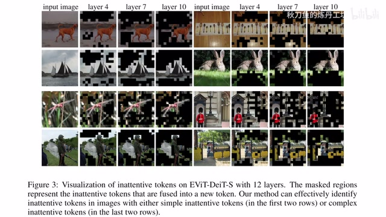
00:04:22–00:04:23 · 画面 014转写与来源说明 · 0 个自动复核提示
保留 11 个原始语音片段，0 个片段触发自动复核提示。提示仅用于定位可能的术语、重复或识别问题，不等于已确认错误。
讲解画面为源视频截图（640×360），不是可编辑 PPT 文件。全片按每秒 2 帧扫描内容变化，逐步展开页保留；连续动画保留代表画面。清晰度受源视频限制。
原视频：paper/合集_2026-10-16_新模型/[论文速览]EViT Expediting Vision Transformers via Token Reorganizations[2202.07800].mp4
SHA-256：0ff4fe8671f3053b1b0541cec8b9e909b0a6a7342692cf8f20560e5786495950
全文按视频语音与画面制作。原论文可从上方链接下载；完整资料包保留全文、原始逐字稿、字幕和校对记录。